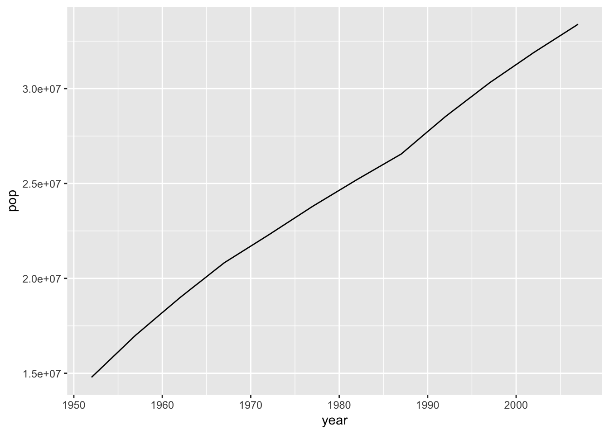

Learning objectives
- Define a function that takes arguments.
- Return a value from a function.
- Test a function.
- Set default values for function arguments.
- Explain why we should divide programs into small, single-purpose functions.
Any operation you will perform more than once can be put into a function. That way, rather than retyping all the commands (and potentially making errors), you can simply call the function, passing it a new dataset or parameters. This may seem cumbersome at first, but writing functions to automate repetitive tasks is incredibly powerful. E.g. each time you call ggplot you are calling a function that someone wrote. Imagine if each time you wanted to make a plot you had to copy and paste or write that code from scratch!
Recall the components of a function. E.g. the log function (see ?log) takes “arguments” x and base and “returns” the base-base logarithm of x. Functions take arguments as input and yield return-values as output. You can define functions to do any number of operations on any number of arguments, but always output a single return value (however there are complex objects into which you can put multiple objects, should you need to).
Let’s start by defining a simple function to add two numbers. This is the basic structure, which you can read as “assign to the variable my_sum a function that takes arguments a and b and returns the_sum.” The body of the function is delimited by the curly-braces. The statements in the body are indented. This makes the code easier to read but does not affect how the code operates.
my_sum <- function(a, b) {
the_sum <- a + b
return(the_sum)
}Notice that no numbers were summed when we ran that code, but now the Environment has an object called my_sum that has type function. You can call my_sum just like you would any other function. When you do, the code between the curly-braces of the my_sum definition is run with whatever values you pass to a and b substituted in their place.
my_sum(a = 2, b = 2)## [1] 4my_sum(3, 4)## [1] 7Just like log provides a default value of base (exp(1)) so that you don’t have to type it every time, you can provide default values to any arguments of your function. Then if the user doesn’t specify them, the defaults will be used.
my_sum2 <- function(a = 1, b = 2) {
the_sum <- a + b
return(the_sum)
}
my_sum2()## [1] 3my_sum2(b = 7)## [1] 8Tip
One feature unique to R is that the return statement is not required. R automatically returns the output of the last line of the body of the function unless a
returnstatement is specified elsewhere. Since other languages require areturnstatement and because it can make reading a function easier, we will explicitly define the return statement.
Let’s define a function F_to_K that converts temperatures from Fahrenheit to Kelvin:
F_to_K <- function(temp) {
K <- ((temp - 32) * (5 / 9)) + 273.15
return(K)
}Calling our own function is no different from calling any other function:
# freezing point of water
F_to_K(32)## [1] 273.15# boiling point of water
F_to_K(212)## [1] 373.15Challenge 1
- Write a function called
K_to_Cthat takes a temperature in K and returns that temperature in C
- Hint: To convert from K to C you subtract 273.15
- Create a new R script, copy
F_to_KandK_to_Cin it, and save it as functions.R in thecodedirectory of your project.
source()ing functionsYou can load all the functions in your code/functions.R script without even opening the file, via the source function. This allows you to keep your functions separate from the analyses which use them.
source('code/functions.R')The real power of functions comes from mixing, matching and combining them into ever large chunks to get the effect we want.
Challenge 2
- Write a new function called
F_to_Cin your functions.R file that converts temperature directly from F to C by reusing the two functions above.- Load the function not by highlighting the code but by
source-ing your functions.R file.- Use the function to find today’s high temperature in your location in C.
Let’s write a function to calculate countries’ GDPs in their local currency.
Start with Canada, exchange rate is 1.279098
Turn that into a function that takes country and exchange rate.
Here is a table of exchange rates for many countries.
Call the function with some row
lapply over rows
And by year
Get all the exchange rates over time. You can download that here.
join, filter
Tip: Pass by value
Functions in R almost always make copies of the data to operate on inside of a function body. When we modify
datinside the function we are modifying the copy of the gapminder dataset stored indat, not the original variable we gave as the first argument.This is called “pass-by-value” and it makes writing code much safer: you can always be sure that whatever changes you make within the body of the function, stay inside the body of the function.
Tip: Function scope
A related concept is scoping: any variables you create or modify inside the body of a function only exist for the lifetime of the function’s execution. When we call
calcGDP, the variablesdat,years, andfilteredDFonly exist inside the body of the function. Even if we have variables of the same name in our interactive R session, they are not modified in any way when executing a function.
Challenge – A new function
Write a new function that takes two arguments, the gapminder data.frame and the name of a country, and plots the change in the country’s population over time. That is, the return value from the function should be a ggplot object. - It is often easier to modify existing code than to start from scratch. Feel free to start with the calcGDP function code.
Solution – A new function
plotPopGrowth <- function(countrytoplot, dat = gapminder) { df <- filter(dat, country == countrytoplot) plot <- ggplot(df, aes(year, pop)) + geom_line() return(plot) } plotPopGrowth('Canada')
This lesson is adapted from the Software Carpentry: R for Reproducible Scientific Analysis Creating Functions materials.